Problem
UCSD undergraduate students are unable to find suitable study spaces
Initial primary and secondary stakeholder interterviews and secondary research confirmed our assumptions were correct, finding a suitable study spot was a problem UCSD undergraduates resonated with. While devising our problem statement, we considered our data that revealed undergraduate students are faced with a plethora of time consuming problems.
Our Solution - INSI
Utilizing user insights to quickly recommend and take UCSD students inside their perfect study spaces
From Insights to Inside
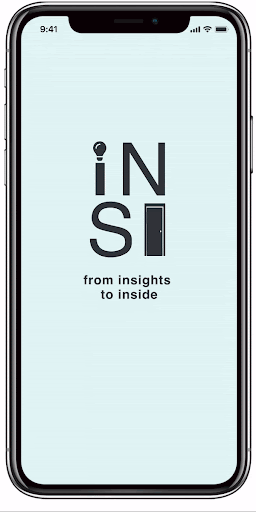Browsing
Study spaces are organized by category on a user's home page (e.g. On and Off Campus categories). Once a users finds a study space pertaining to a certain category, they are led them to a pop-up modal that presents information about hours of operation, address, and an overview of amenities. If they are further interested in the study space, they can click on the modal that leads them to a detailed description of the place.
Favorites & Collections
For easier access, users have the option of favoriting study spots. When study spaces are favorited, they are moved to one centralized area, the Favorites page. Users can access this page by clicking the "Favorites" button in the sidebar menu of the home screen.
In the Favorites page users also have the option of toggling between the Favorites page and Collections page.
The Collections page is where users can make "collections" of their favorited study spaces to further organize them (e.g. a collection titled "Cozy Spots" would contain study spaces a user believed to be "cozy"). When inside a collection, users can see all the favorited study spaces they have added to that particular collection, can add and delete spaces from there, and rename the collection.
Our Process
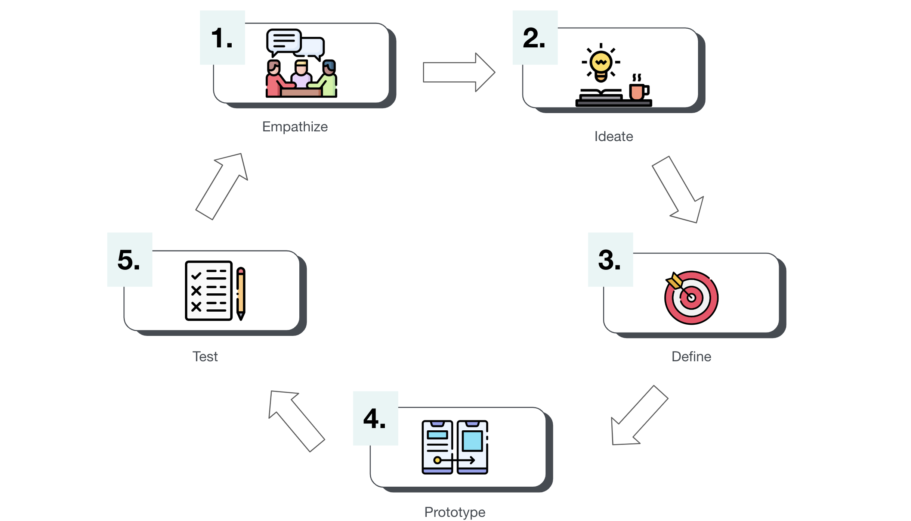1. Empathize
User Persona
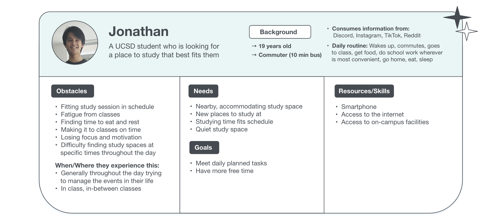To empathize with our users, we conducted user research by interviewing stakeholders to help us create a user persona. We chose our primary stakeholder to be Jonathan. With our persona, we wanted to help users like Jonathan overcome their obstacles and fulfill their needs.
Interviews
"Can you recall a time you had difficulty finding a study spot?"
"One time I had a short gap in between classes so I didn't have much time to look for a spot. I ended up just sitting outside on some benches because I knew I probably wouldn't find anything."
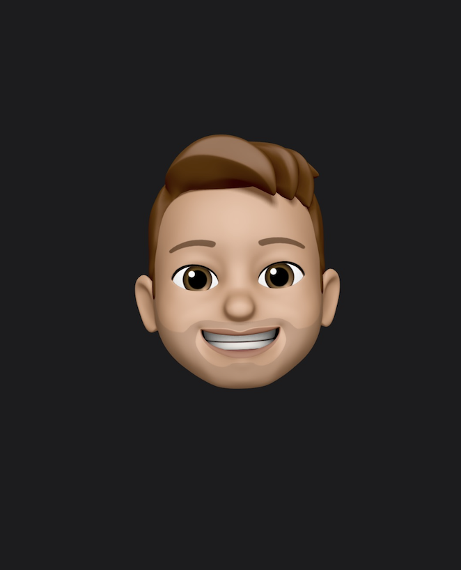Daniel
Primary Stakholder
"I usually study at the Women's Center, but it closes at 3pm. After that it's really hard to find a place because a lot of people are done with their classes and are all looking for somewhere to study."
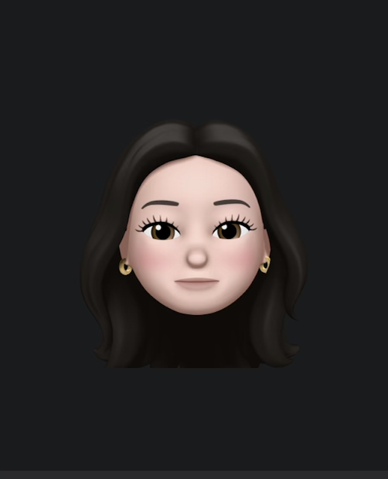Aubry
Primary Stakholder
"I like studying at the cafes on campus but a lot of the times I just pick one randomly and hope I get lucky [finding a seat]. People usually stay at a table for a long time and I don't have a way of telling if there's an open spot."
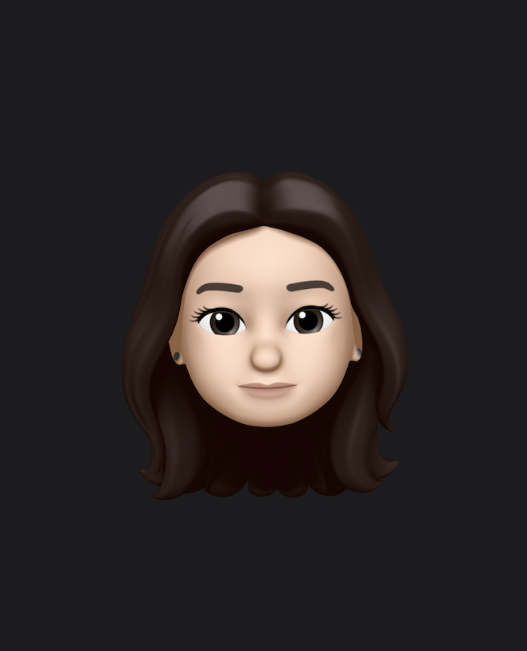Angie
Primary Stakholder
"During finals week it's almost impossible to find somewhere to study on campus. I avoid going to the library because it's super packed during that time but that's where I usually try to study so it sucks."

Carlos
Primary Stakholder
*All of our interviewees said finding suitable study spots was a problem they resonated with.
Competitive Analysis

Our competitive analysis revealed competitors lack user interest filters, pattern recognition, user messaging, and consistency in providing adequate information. The strength of our app would be consistency in providing ample information on study spaces and recommendation of study spaces based on user preferences and filters.
2. Define
Problem Statement
How might we help UCSD students quickly find locations that meet their personal study space preferences in order to maximize their time to attend to their other responsibilities as students?
Pain Points
1) Unsure if study spaces have:
a. Spot available b. Amenities c.Ambiance
2) Difficulty finding study spots at specific times of the day
Mission Statement
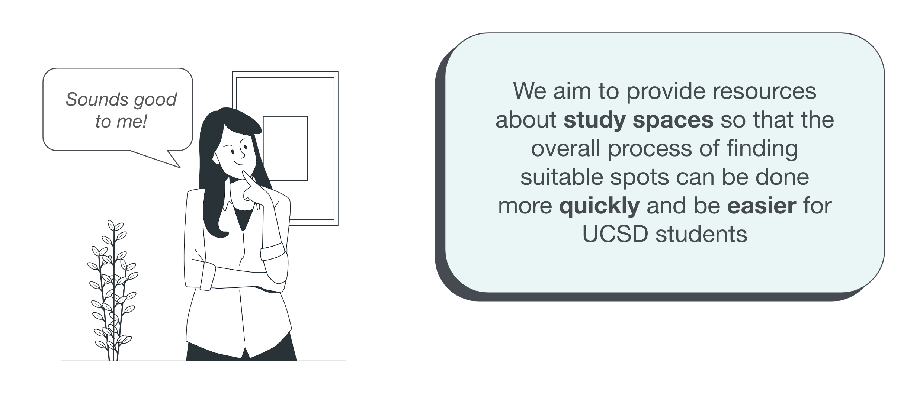3. Ideate
INSI's Core Features
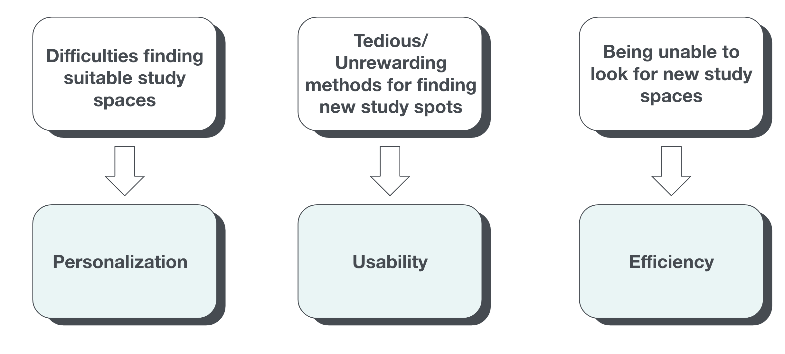 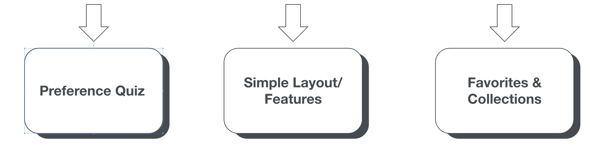We ideated 3 core features for INSI based off different problems we identified during our empathize stage. We then used these core features to help develop the main features of our app: the 5 question preference quiz, it's simple features and an overall easy to understand layout, and the favorites and collections pages.
Our mood-board for INSI included, pastel blue, green, light tan, and white colors. We believed these colors were all fun, soft, bright and overall best conveyed our envisioned welcoming, productive and uplifting atmosphere. We particularly liked the images of people being productive since we hoped our app would help UCSD student find spaces that helped them focus and be productive. We also enjoyed the minimalistic feeling of these images and hoped to include this clean and simple aesthetic in our app.
With the help our or mood-board, our initial style guide included a soft, robin egg blue color with dark grey for accents, paired with standard white and black colors. For our typeface we chose Helvetica (ADA-Compliant) to ensure accessibility for all users. We felt this guide was closest to matching our idea of INSI having a simple, clean feel for most efficient use while still being lively and welcoming for users.
4. Lo-fi Prototype
Ideation
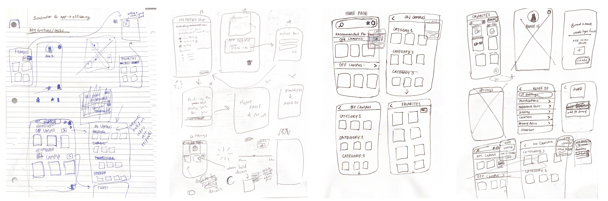Prototype Screens
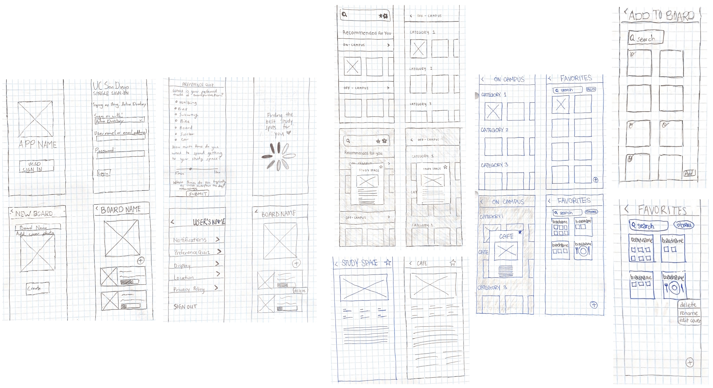Prototype in Action
*We used the Marvel application to create our Lo-fi prototype.
4.1 Lo-fi Prototype User Testing
Goals
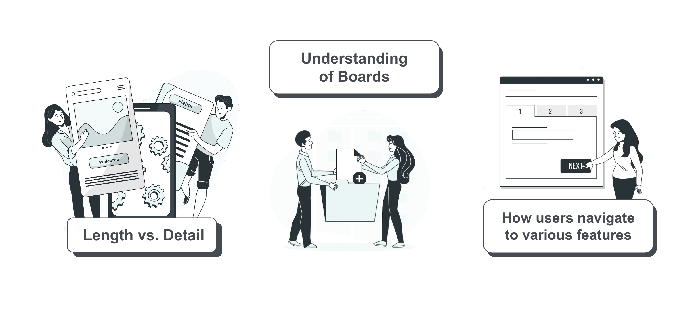For our Lo-fi prototype user testing we wanted to find out:
The tradeoff between length and detail in our onboarding process
If our users understood the concept of boards
How users navigate to various features such as favorites, collections, and study spaces
User Testing
We conducted our user testing through zoom and utilized its screen recording capabilities track and collect data how users interacted with our prototype. Afterwards we asked participants follow-up questions regarding different aspects of our app.
Insights
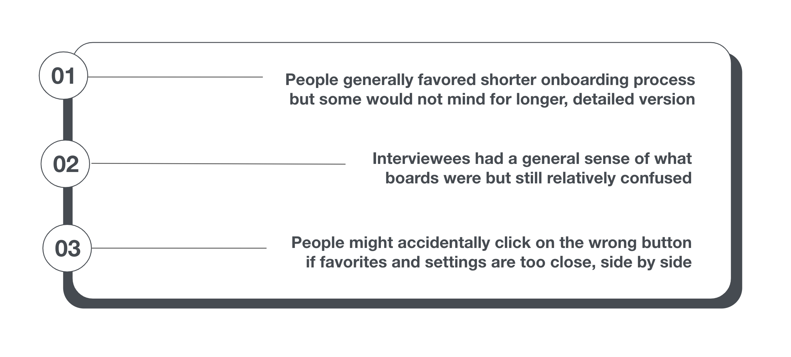By analyzing our data we found that people generally favored shorter onboarding processes but there were also some who were willing to tradeoff length for details. Interviewees also had a correct general sense of what boards meant in the context of our app, but they were still relatively confused. In addition, we found that people might accidentally click on the wrong button if favorites and settings are too close.
Iterations
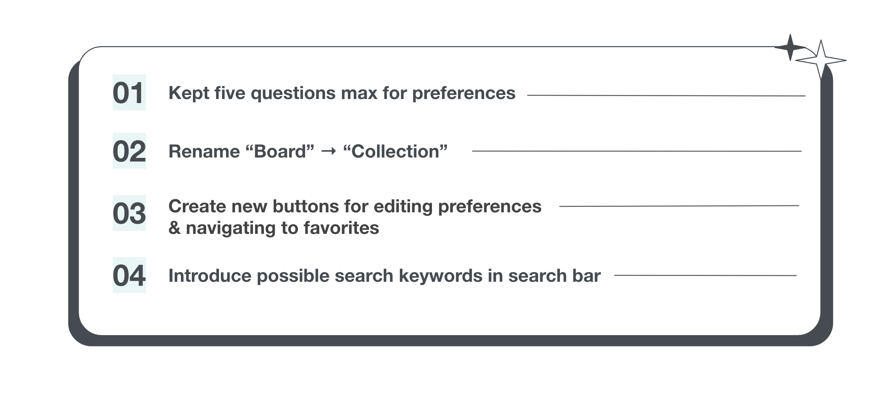We decided to keep preference questions to at most five. To help make boards more clear, we renamed it to collections so that its purpose and function is more intuitive for users. Also, instead of having favorites and settings icons side by side, we created new buttons to edit preferences and to access favorites. We also introduced possible search keywords in search bar to signify what users can search for
5. Hi-fi Prototype
Final Style Guide - Components
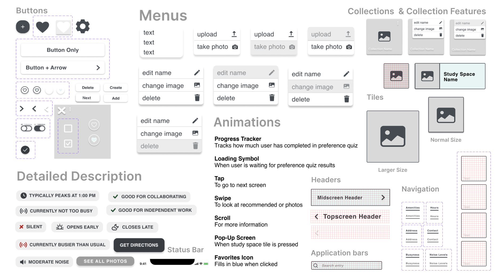Final Style Guide - Typography

Our final style guide is nearly the same as our initial style guide. We added a gray color for when a button is being hovered. Light blue is for headers and for the inside of objects, the light black is for icons, text, and borders, the white is for the background, and the black is for accents. Our typeface is still Helvetica which is bolded for the headers and is regular for the body text.
Visual Reference
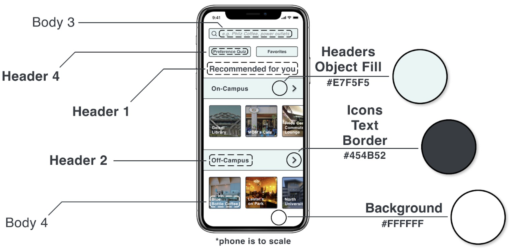Prototype in Action
5.1 Hi-fi Prototype User Testing
Goals
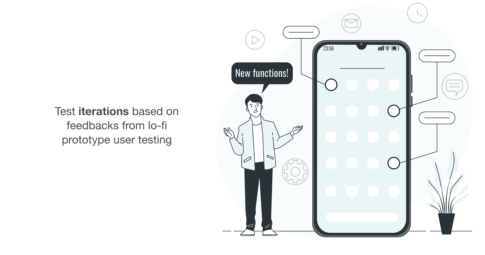We wanted to hear what people thought of our renaming of 'board' to 'collecion,' the new buttons for editing preference quizzes and the favorites section, and our addition of the search keywords in the search bar.
User Testing
We conducted our user testing through zoom and utilized its screen recording capabilities track and collect data how users interacted with our prototype. Afterwards we asked participants follow-up questions regarding different aspects of our app.
Findings
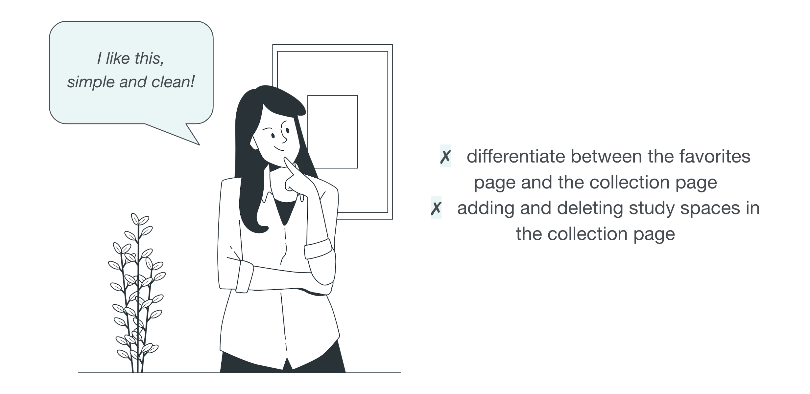We discovered that users enoyed the app's appearance since it was fun and bright. They did say that it was difficult to tell the difference between the favorites page and collection page. Because of the ambigious signifiers, it was difficult for them to add and delete study spaces on the collection page.
Final Iterations
Users suggested it would be more efficient to have all the pages be reachable from one centralized area. We included a sidebar menu next to the search bar that includes all the app pages.
Since users often avoided clicking the people often avoided clicking the "Preference Quiz" button during our user testing, we renamed this button to "Preferences" since the word "quiz" often carries negative connotations.
We included scrollable photographs to the study space full description page to display specifics about amenities so users would know what to anticipate at the study area. We also linked the maps to Google Map and Apple Map to make navigation easier for users.
The creating and deleting features in the collection page weren’t intuitive for some users. We changed the location of the creating button (i.e. '+') to the top right corner of the screen and have the delete button as three dots. We hoped to utilize app conventions for creating and deleting symbols to improve the intuitiveness of our app.